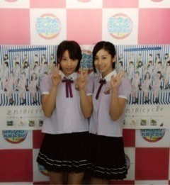
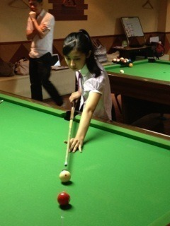
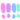
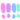
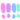

| 2012/08 19 Sun | 北海道レポ(´>∀<｀)ゝ101 |
おばあちゃんちの方に行ったら
コスモスが咲いてました◝(●˙꒳˙●)◜
秋はもうすぐ。♡
こんにちはるん(´>∀<｀)ゝ
皆さん、温かいコメントありがとうヽ(^ω^)ﾉ

コメントってやっぱり繋がるよね‼♡

北海道わずわず。
北海道ーおいしかったーヽ(^0^)ﾉ
楽しかったーヽ(^0^)ﾉ
涼しかったーヽ(^0^)ﾉ
最高だったーヽ(^0^)ﾉ
おいしいものたらふく食べたよ！
味噌ラーメン♡
ソフトクリーム♡
海鮮料理♡
スープカレー♡
わおわお
嬉しい気持ち


１日目には
取材や、ラジオ、テレビのコメント撮りなどを
たくさんさせていただきました♪(o・ω・)ノ))♡

最初は話すこともまとまらないし
慣れてないから大変だったけど
最後の方には雰囲気もつかめてきて
すごいいい経験ができました
♡♡
そして２日目には
色々なCDショップさんへ挨拶をさせていただきました♪(o・ω・)ノ))
店員さんとお話したり、
ポスターにサインをしたり、
写真を撮ったり、
メッセージカードを書いたりしてきましたー( ´ ▽ ` )ﾉ
お邪魔しました

ありがとうございました(o^^o)
近くに行ったら探してみてね

そして、２日目の最後には
なんと初体験のビリヤードをやってきたんです
 ‼
‼
‼
あ。遊んでた訳じゃないよ。
取材なのよ。

どや。
THE真剣な感じね
全く入らないかと思ったけど
ナインゲームでは最後もばっちり決めて勝ったよヽ(^ω^)ﾉわーー
ビリヤードアイドルとして
あみと活動しようかと
真剣に考えたのよ(´･-･`)
悩みの種
とゆーことでね、
ほっんとに充実した２日間を過ごしてきたよ＼(^^)／
今度は牧場とか、旭山動物園とか行ってみたい

今日のメンバー紹介は
やっぱりこの人でしょ
 


あみあみ。(๑•ૅω•´๑)
あみとは最近仲良くて結構一緒にいる時間多いかもなーヽ(^0^)ﾉ
最近メンバーの中であみに似てると
噂されるようになってきたのも
最近になってからで笑
影響されてるみたいよ(´Д` )

だってこんなに面白くて場を明るく笑いに包ませる人なんて
あみが初めてだとおもう！
無意識に、人を笑顔にさせるあみに憧れたのかもしれない(^^)/
あみ、最初はすごい人見知りで話しかけづらい感じで喋れなかったの。
意外でしょ？笑
だけど今はこんなだし人ってわかんないねー(´Д` )

普段はこんなんでもあみダンスとかすごい上手だしかっこいいよ！
人知れず隠れて努力してるんだなーって思った(*´ω`*)
くぅぅぅぅかっこいいぜ
あみみたいになりたいかも！笑
大好きやー(๑•ૅω•´๑)
終わりっ♡
昨日の乃木どこ収録ねー
楽しかったよ楽しかった( ；∀；)
乃木メンほんとすき
またねん
ばいるんっ
るんるんっ
ちはるんっ
(´>∀<｀)ゝ
コメント(67)
2012/08/19 12:36